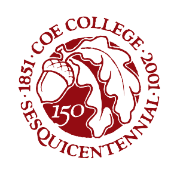

Coe Tree Archive
Purpose
The Coe Tree Archive serves as a tool to connect current and future members of the Coe community with the trees they encounter everyday. In doing so, this project attempts to reorient ourselves to the trees that surround us, viewing the trees around us a valuable part of our community in their own right. Additionally, through the Coe Tree Archive, we hope that students recognize the power they have to improve the environment around them. For future members of the Coe community, we hope that this project offers a valuable glimpse into our tree life at this moment in history.
Guiding Principles
Trees are a Part of Our College Identity
Trees—particularly Oak trees—have long been an important part of the identity of Coe College. The College’s yearbook, which ran from 1903 through 2007, was called The Acorn. Likewise, the College’s sesquicentennial logo features an acorn and Oak leaves. The weeks following the August 2020 derecho were filled with great loss, but maybe most noticeably, the great loss of trees. In this moment, we were able to recognize more clearly the importance of our trees to our sense of community. The derecho provides a sobering reminder: greater risk of natural disaster means our trees are under a greater threat than ever. Recognizing that trees are both vital to our community identity and under threat, the Coe Tree Archive seeks to preserve this valuable component of our community identity. The Coe Tree Archive solidifies trees and our natural environment as an integral part of our college identify by recognizing the history of our trees as worthy of archiving alongside other aspects of the College’s history.

Our Environment is Mutable
We have a remarkable ability to transform our environment. While we increasingly see ways in which people have the capacity to destroy our environment and our climate, it is also important to appreciate humanity’s ability to contribute to nature. This makes for what may seem like a rare instance of optimism. As a community, we have tremendous agency over the urban forest on Coe’s campus. We should take comfort in opportunities we have to give back to our communities through nature.

Planting Trees Will Not Save the World—But It Can Benefit Someone
Although we should not underestimate the power each of us has to change the world, we must also acknowledge that climate change, environmental injustice, and the degradation of the natural world are not issues any of us can can resolve individually. We cannot plant enough trees to compensate for systemic economic failures that incentivize greenhouse gas emissions.
Still, trees provide tangible benefits to our local community. The project encourages all of us to find ways we can make piecemeal efforts to improve the quality of environments we inhabit. Whether its by volunteering with environmental groups, sharing our financial resources, speaking up for environmental causes, or of course, planting trees, the efforts we make today to improve our local environment benefit our community in meaningful ways. The Coe Tree Archive seeks to illustrate this point by celebrating not only our trees, but the staff, students, faculty, and alumni who have invested in the future of our campus by planting trees.
Project Background
One of Evan’s favorite trees on campus, a Thornless Honey Locust outside of Eby.
The Coe Tree Archive was created and is maintained by Evan Perry, a current senior studying Economics and Math at Coe.
This project did not materialize in a vacuum, but is the byproduct of the efforts of many others. The original project inspiration goes to Coe professor Allison Carr. It was in Dr. Carr’s Environmental Rhetoric class where the project began as one way to find new ways to connect with nature in our everyday lives. As the project progressed, the opportunity to preserve the record of these trees became more tangible and the concept of the Coe Tree Archive came together. Similar efforts by others, like Dr. Marta Wells of Yale Nature Walk, helped to push the effort into its current form. Additionally, this project has benefited from the invaluable feedback of other students in the Fall 2022 Environmental Rhetoric class.
Starting summer 2023, Evan will be joining the Federal Reserve Bank of New York as a Research Analyst in the Bank’s newly formed Climate Risk Studies department. You can contact Evan by emailing coe.tree.archive@gmail.com.